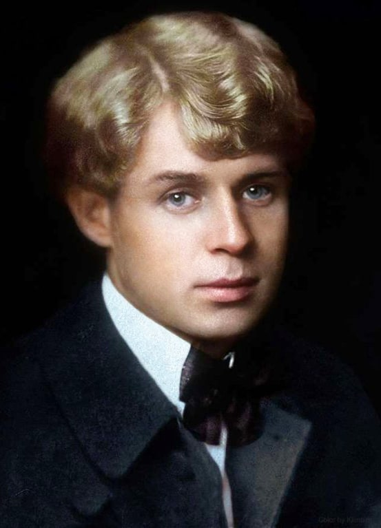

|  |
Сергей ЕсенинГоды жизни: 03 октября 1895 — 28 декабря 1925 Сергей Есенин не сразу нашел свое литературное кредо: он бросался из одного направления в другое. Сначала выступал в лаптях и рубахе с новокрестьянскими поэтами, затем, облачившись в пиджак и галстук, создавал с имажинистами новую литературу. В конце концов он отказался от всех школ и стал свободным художником, заявив: «Я не крестьянский поэт и не имажинист, я просто поэт». «Я отвоевал свою свободу»: детство и юность Сергея ЕсенинаСергей Есенин родился 3 октября 1895 года в селе Константинове Рязанской губернии. Жизнь в русской глубинке с раннего детства вдохновляла мальчика, и уже в девять лет он написал свои первые стихи. Начальное образование Сергей Есенин получил в земской школе — будущий поэт закончил ее с отличием. Однако, как он позже вспоминал, учеба никак не отразилась на его становлении и не оставила ничего, «кроме крепкого знания церковнославянского языка». Когда мальчику исполнилось 14 лет, его отдали в Спас-Клепиковскую учительскую школу: родители хотели, чтобы сын стал сельским учителем. Но Есенин свое призвание видел в поэзии, поэтому в школе продолжал писать стихотворения. Он даже пытался издать в Рязани свой сборник «Больные думы», но книгу не напечатали. После окончания школы, летом 1912 года, Сергей Есенин приехал в Москву: осенью он должен был поступать в Московский учительский институт. Но наперекор решению родителей устроился в книгоиздательство «Культура» и отказался учиться. «Теперь решено. Я один. Жить теперь буду без посторонней помощи. <…> Эх, теперь, вероятно, ничего мне не видать родного. Ну что ж! Я отвоевал свою свободу», — писал он другу Григорию Панфилову. Есенин присылал свои стихи в московские журналы, но их не публиковали. В одном из писем Панфилову поэт признавался: «Особенно душило меня безденежье, но я все-таки твердо вынес удар роковой судьбы, ни к кому не обращался и ни перед кем не заискивал». Чтобы иметь средства к существованию, молодой поэт подрабатывал продавцом в книжном магазине. В 1913 году он стал вольнослушателем историко-философского цикла в Московском городском народном университете имени Альфонса Шанявского. Занятия проходили по вечерам, поэтому Есенин легко совмещал их с дневной работой. В это время он служил в типографии Товарищества Ивана Сытина. Сначала работал экспедитором, затем — помощником корректора. В этот период Есенин увлекся идеями социал-демократической партии. Поэт распространял политические листовки, выступал перед рабочими в заводских районах и агитировал их бороться за свои права. 23 сентября 1913 года Есенин участвовал в общемосковской забастовке против гонений на пролетарскую печать. О происходящем поэт сообщал Панфилову: «Там возле тебя мирно и плавно текут, чередуясь, блаженные дни, а здесь кипит, бурлит и сверлит холодное время, подхватывая на своем течении всякие зародыши правды, стискивает в свои ледяные объятия и несет бог весть куда в далекие края, откуда никто не приходит». Аресты демонстрантов, полицейские репрессии, гонения на рабочую печать — все это юный поэт остро переживал и отражал в своих стихотворениях. К тому времени у Есенина собралась книга стихов «Радуница». Некоторые сочинения из сборника он отправил в петербургские журналы, но ни одного ответа так и не получил. Зато московские издания стали печатать поэта: детский журнал «Мирок» опубликовал стихотворения «Береза», «Воробышки», «Пороша», «Село», «Пасхальный благовест», а большевистская газета «Путь правды» напечатала стихотворение «Кузнец». Скитания поэта в столицеВскоре жизнь в Москве стала угнетать Есенина. Город все больше казался поэту литературной провинцией, мимо которой проходила реальная общественная и культурная жизнь страны. В письме Панфилову он сетовал: «Москва — это бездушный город, и все, кто рвется к солнцу и свету, большей частью бегут от нее. Москва не есть двигатель литературного развития, а она всем пользуется готовым из Петербурга». Так родилось решение переехать в столицу. В 1915 году Есенин прибыл Петроград. Он сразу отправился к своему авторитету в мире литературы — Александру Блоку. Тот познакомил его с писателем Михаилом Мурашевым и поэтом Сергеем Городецким. Известные петроградские авторы дали юноше рекомендательные записки в редакции журналов, и наконец стихи Есенина появились в столичных изданиях. Вернувшись в Петроград Сергей Есенин стал членом объединения крестьянских писателей «Краса». Вместе с его участниками поэт впервые выступил на открытом литературном вечере. По словам Городецкого, это был «первый публичный успех Есенина». Вскоре «Краса» распалась, и Сергей Есенин перешел в литературно-художественное общество «Страда». Несмотря на большой успех, он едва сводил концы с концами: выступления почти ничего не приносили. Поэзия Сергея ЕсенинаВ 1916 году вышел первый сборник — «Радуница». О Есенине заговорили как о самобытном поэте-лирике, художнике «дивных красок», творце, у которого есть будущее. Сам поэт писал: «Стихи мои произвели большое впечатление. Все лучшие журналы того времени стали печатать меня, а осенью появилась моя первая книга «Радуница». О ней много писали. Все в один голос говорили, что я талант. Я знал это лучше других». Вскоре после выхода книги Есенина призвали в армию. Благодаря ходатайству полковника Дмитрия Ломана поэт отправился не на фронт Первой мировой войны, а в Петроградский резерв военных санитаров, оттуда — в Царскосельский лазарет. Своим покровительством Ломан рассчитывал приблизить к себе Есенина и сделать из него придворного поэта. Однако этот расчет не оправдался. Поэт написал ряд свободолюбивых стихотворений: «За темной прядью перелесиц», «Синее небо, цветная дуга…», «Микола». «Неприятности» настигли Есенина в феврале 1917 года, когда он вновь «отказался написать стихи в честь царя», — вольнолюбивого поэта отправили на фронт в дисциплинарный батальон. Однако попасть на войну он не успел: началась Февральская революция, вслед за которой все решения царского режима были отменены. В этот период Есенин создал цикл поэм «Товарищ», «Певущий зов», «Отчарь» и «Октоих», в которых возник образ революции. Сам поэт признавался, что «первый период революции встретил сочувственно, но больше стихийно, чем сознательно». В марте 1918 года Есенин приехал в Москву. Здесь поэт подготовил к печати сборники стихов «Голубень», «Преображение» и «Сельский часослов», написал теоретический трактат «Ключи Марии» о творчестве и литературе, сочинил поэмы «Инония» и «Иорданская голубица» с библейскими мотивами. Несмотря на то что Сергей Есенин с воодушевлением принял Октябрьскую революцию, он тяжело переживал ломку крестьянского быта. Эти печальные, ностальгические настроения легли в основу поэмы «Сорокоуст». Поэт в «передовой линии имажинизма»На одном из поэтических вечеров 1918 года Сергей Есенин вместе с Анатолием Мариенгофом, Вадимом Шершеневичем и Рюриком Ивневым решили создать новую школу поэзии — имажинизм. Главной идеей этого литературного направления стала независимость образа (по-латински imago) от действительности. В 1919 году поэты опубликовали декларацию имажинизма. Основной пункт программы они описывали так: «Образ как самоцель. Слово требует освобождения от идеи. <…> Поедание образом смысла — вот путь развития поэтического слова». Идеи имажинистов звучали провокационно, но не свежо: декаденты пропагандировали освобождение поэзии от смысла еще до революции. Есенин быстро убедился в несостоятельности новой программы, а основные ее положения позже раскритиковал в статье «Быт и искусство». Однако порвать отношения с имажинистами Есенину сразу не удалось — он слишком привык к постоянным совместным кутежам. Разгульный образ жизни отразился на творчестве поэта: он создал цикл стихотворений «Москва кабацкая». Из лирики исчезла жизнерадостность и деревенские зарисовки, на смену пришли мрачные пейзажи ночного города, где бродит потерянный лирический герой. Повседневный быт угнетал поэта: «Живу я как-то по-бивуачному, — жаловался он в одном из писем, — без приюта и без пристанища, потому что домой стали ходить и беспокоить разные бездельники. Им, видите ли, приятно выпить со мной! Я не знаю даже, как и отделаться от такого головотяпства, а прожигать себя стало совестно и жалко». Выход из этого положения Есенин нашел в творчестве. Поэт работал над драматической поэмой «Пугачев» и решил отправиться в путешествие по местам пугачевского движения. В 1921 году Есенин уехал из Москвы в Среднюю Азию и Поволжье. В поездке поэт закончил поэму и смог отвлечься. Новое произведение публика приняла радушно. Максим Горький писал: «Даже не верилось, что этот маленький человек обладает такой огромной силой чувства, такой совершенной выразительностью», а режиссер Всеволод Мейерхольд планировал поставить поэму в театре РСФСР-1. Весной 1922 года Сергей Есенин уехал за границу. Он побывал в Германии, Бельгии, Франции, Италии, Америке. Впечатления поэта от зарубежной поездки были противоречивыми. В своих письмах он отмечал внешнюю красоту — «после нашей разрухи здесь все прибрано и выглажено под утюг». Но в то же время он не чувствовал в этом духовности: «Человека я пока еще не встречал и не знаю, где им пахнет. <…> Пусть мы нищие, пусть у нас голод, холод и людоедство, зато у нас есть душа, которую здесь сдали за ненадобностью в аренду под смердяковщину». В путешествии Есенин продолжал работать. Он начал писать драматическую поэму «Страна негодяев», сделал наброски поэмы «Чёрный человек». Личная жизнь Сергея ЕсенинаС Анной Изрядновой Сергей Есенин познакомился в 1913 году в типографии Сытина. Вместе они не только работали, но учились в университете Шанявского. Вскоре у них завязался роман. Изряднова вспоминала: «Ко мне очень привязался, читал стихи. Требователен был ужасно, не велел даже с женщинами разговаривать — «они нехорошие». Настроение было у него упадочное — он поэт, никто не хочет его понять, редакции не принимают в печать, отец журит… Все жалованье тратил на книги, журналы, нисколько не думал, как жить». Через несколько месяцев после знакомства Есенин и Изряднова начали жить вместе. Есенин почти сразу разочаровался в семейной жизни: свое предназначение он видел в литературе и поэтическом успехе. Изряднова чувствовала себя помехой: «Есенину пришлось много канителиться со мной (жили мы только вдвоем)». В 1915 году у них родился сын Юрий, а Есенин оставил Анну. Первой официальной женой Есенина стала Зинаида Райх. Они познакомились весной 1917 года. К тому моменту Есенин уже был известным поэтом, а она работала секретарем-машинисткой в газете «Дело народа». Есенины жили в Орле, затем переехали в Петроград, оттуда в 1918 году — в Москву. Семейная жизнь вновь не ладилась, и поэт ушел от Райх. Официально они развелись только в 1921 году. В браке у Есениных родилось двое детей — дочь Татьяна и сын Константин. Осенью 1921 года Сергей Есенин познакомился с Айседорой Дункан. Американская танцовщица приехала в страну на гастроли. Чувства между поэтом и артисткой вспыхнули практически сразу. «Это была глубокая взаимная любовь», — писал Сергей Городецкий. «Конечно, — добавлял он, — Есенин был влюблен столько же в Дункан, сколько в ее славу, но влюблен был не меньше, чем вообще мог влюбляться». В 1922 году Сергей Есенин и Айседора Дункан поженились. Литератор решил сопровождать свою жену на гастролях в Западной Европе и США. Сам он планировал за границей вести творческую пропаганду родины. Друзьям поэт заявлял: «Я еду на Запад для того, чтобы показать Западу, что такое русский поэт». Властям обещал наладить в Берлине издательство книг русских поэтов, а в Америке — урегулировать отношения между советским государством и Штатами. В Советский Союз пара возвратилась в 1923 году, и вскоре супруги расстались. Есенина и Дункан многое разделяло: разница в возрасте (танцовщица была старше поэта на 17 лет), языковой барьер, разница в мировоззрении. Общий товарищ Сергей Коненков писал: «Дункан была яркая, необычная фигура. Она много дала Есенину, но еще больше забрала у него нравственных и душевных сил». Сергея Есенина «всегда тяготила семейная неустроенность, отсутствие своего угла», — писала сестра поэта Александра. Это ощущение не оставило литератора и с новыми отношениями. В 1925 году Есенин познакомился с Софьей Толстой, внучкой Льва Толстого. Через несколько месяцев они поженились. Но и этот брак не осчастливил Есенина: «Все, на что я надеялся, о чем мечтал, идет прахом. Видно, в Москве мне не остепениться. Семейная жизнь не клеится, хочу бежать». С Софьей Толстой поэт развелся через полгода совместной жизни. Болезнь и смерть Сергея ЕсенинаНа родину поэт вернулся только через год. Он распрощался со всеми литературными направлениями, к которым себя когда-то причислял, и заявил: «Я не крестьянский поэт и не имажинист, я просто поэт». Он решил стать «певцом новой жизни» и написал историко-революционную поэму «Песнь о великом походе», героическую повесть «Поэма о 36», стихотворение о революции «Воспоминание». В сентябре 1924 года Есенин отправился в закавказские республики. За полгода своего путешествия он выпустил две книги стихов — «Русь Советскую» и «Страну Советскую», написал «Балладу о двадцати шести», стихотворения «Письмо к женщине», «Мой путь», в «Капитан земли», «Русь уходящая», «Русь бесприютная», «Цветы», «Памяти Брюсова», начал поэму «Анна Снегина» и цикл стихов «Персидские мотивы». Иногда поэт приезжал в родную деревню. Здесь он создал стихотворения «Возвращение на родину», «Отговорила роща золотая…», «Низкий дом с голубыми ставнями…», «Видно, так заведено навеки…». Деревенские впечатления позже легли в основу других произведений поэта: «Этой грусти теперь не рассыпать…», «Не вернусь я в отчий дом…», «Спит ковыль. Равнина дорогая…», «Сыпь, тальянка, звонко, сыпь, тальянка, смело…». К середине 1925 года на смену плодотворному творческому периоду Есенина пришла полоса душевного кризиса. Пессимистические настроения и расшатанные нервы осложнялись физическим недомоганием. Врачи настояли, чтобы поэт прошел курс лечения в психоневрологической клинике. В больнице Есенин продолжал работать. Здесь он написал «Не гляди на меня с упреком…», «Ты меня не любишь, не жалеешь…», «Может, поздно, может, слишком рано…», «Кто я? Что я? Только лишь мечтатель…», которые вошли в цикл «Стихи о которой…». Так и не долечившись в клинике, литератор решил резко порвать с прошлым и уехал в Ленинград. Однако обрести покой писателю не удалось: его постоянно посещали старые знакомые. 28 декабря 1925 года, ослабленный болезнью и депрессивными мыслями, поэт покончил с собой. Похоронили его на Ваганьковском кладбище в Москве. |